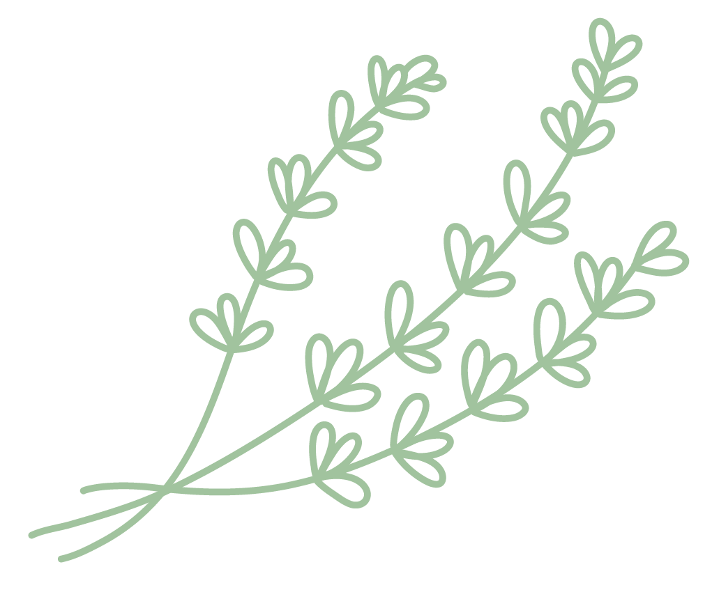

About Us
How We Got Started

How We Got Started The Comox Valley Farmers’ Market Association in a not for profit society that has been bringing local food to local folks since 1992. Over the last twenty-five plus years we have grown from a seasonal Saturday market with a dozen vendors selling product off the tailgate of their pickup truck to a year-round Saturday market and two seasonal markets with over one hundred vendors selling a wide array of products that are grown, made, baked, raised or wild harvested within the Comox Valley and Strathcona Regional District.
Our farmers and producers offer fresh in season fruits and vegetables, wild harvested foods, small scale meat and seafood, eggs, artisan food products, ready to eat food and drink and craft beer, wine and spirits.
When you shop at a Comox Valley Farmers’ Market, you’re not just buying fresh, delicious, nutritionally dense food directly from local producers, you are also contributing direct and indirect dollars that benefits the local and regional economy and keeping local farmland in sustainable food production.
The market is not only a place to pick up your weekly groceries but a healthy family-oriented community gathering place where you can meet and catch up over a cup of hot coffee and a cinnamon bun while listening to the live local entertainment. There are lots of opportunities to taste something new or gather ideas about spicing up an old favorite. There is something for everyone.
Come for the freshness and stay for the fun!
Our Purpose To promote the economic health of the local farm community, To provide quality locally grown farm products, To educate the community in agricultural issues, and To promote local agriculture.
Pricing
| Product | Price | Quantity Available | Description |
|---|---|---|---|
| Apples | $2.00 / lb | 50 lbs | Fresh, locally grown apples. |
| Carrots | $1.50 / bunch | 30 bunches | Organic carrots with greens. |
| Honey | $10.00 / jar | 20 jars | Raw, unfiltered local honey. |
| Eggs | $5.00 / dozen | 40 dozen | Free-range, farm-fresh eggs. |
| Tomatoes | $3.00 / lb | 25 lbs | Heirloom tomatoes, perfect for salads. |
Want more info about our Markets?
Stay in touch
Join our newsletter